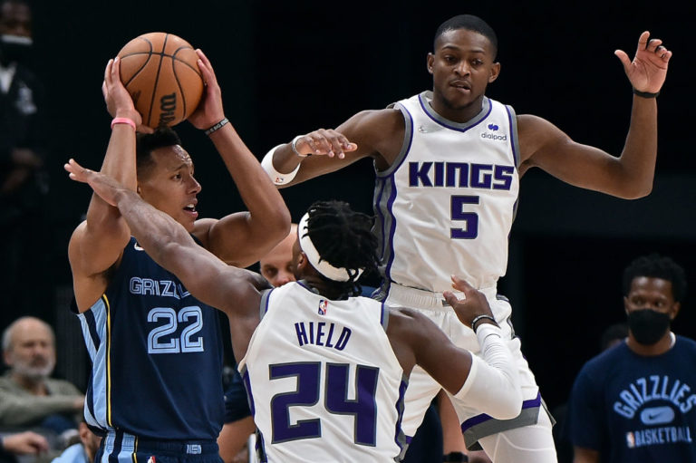

Enterate de lo ultimo
para siempre estar actualizado sobre la NBA
-
-
LeBron está cerca de cumplir 37 años pero sigue siendo uno de los mejores jugadores del mundo...
-
El regreso de Zion Williamson tendrá que esperar un poco más. El número uno del draft de 2019 ha vuelto a experimentar dolor en su pie derecho, por lo que su regreso se ha retrasado...
-
Necesitaban los Celtics un partido así. En uno inicio de curso que no se puede definir como menos que irregular, los verdes se dieron anoche el gusto de batir a los actuales campeones...
-
Los Suns siguen en la lucha por el primer puesto del Oeste mientras los Blazers parecen hundirse sin remedio. Anoche, en Oregon, Portland fue capaz de remontar y llegar a la prórroga...
-
James Harden, LaMarcus Aldridge, DeAndre Bembry, Bruce Brown, Jevon Carter, James Johnson y Paul Millsap. Esa fue anoche la lista de ausencias de Brooklyn a causa del protocolo de salud y seguridad contra el coronavirus...
-
Los Dallas Mavericks habrían contactado con los Brooklyn Nets interesándose en la situación de Kyrie Irving, quien continúa apartado de la disciplina neoyorquina debido a su negativa a ponerse la vacuna contra la COVID-19...
-
 En Sacramento tienen planeado agitar el mercado en las próximas fechas. Según ha informado el periodista del Sacramento Bee, Jason Anderson, los Kings buscarán incorporar a un jugador de calidad mediante un paquete compuesto por Buddy Hield y Marvin Bagley III...
-

Ricky Rubio ha vuelto a conseguir otro hito en su carrera deportiva con las 5.000 asistencias en la NBA. El base catalán cosechó 7 puntos y 7 pases de canasta en la cuarta victoria consecutiva de Cleveland Cavaliers ante Miami Heat...
-
Parece que, poco a poco, Los Angeles Lakers van enderezando el rumbo. El triunfo cosechado este domingo ante Orlando Magic les permite asentarse en el sexto puesto de la Conferencia Oeste...
-
Día de muchos rumores de diversa índole en el seno de la NBA. El periodista de The Athletic, Shams Charania, ha informado que varios equipos han llamado a las oficinas de los Atlanta Hawks...
-
Los Brooklyn Nets han superado una cuarta parte de la temporada regular en una situación tan singular que se torna contradictoria. Las 16 victorias cosechadas permiten liderar la Conferencia Este aunque este éxito esconde un recorrido sobre la cuerda floja.